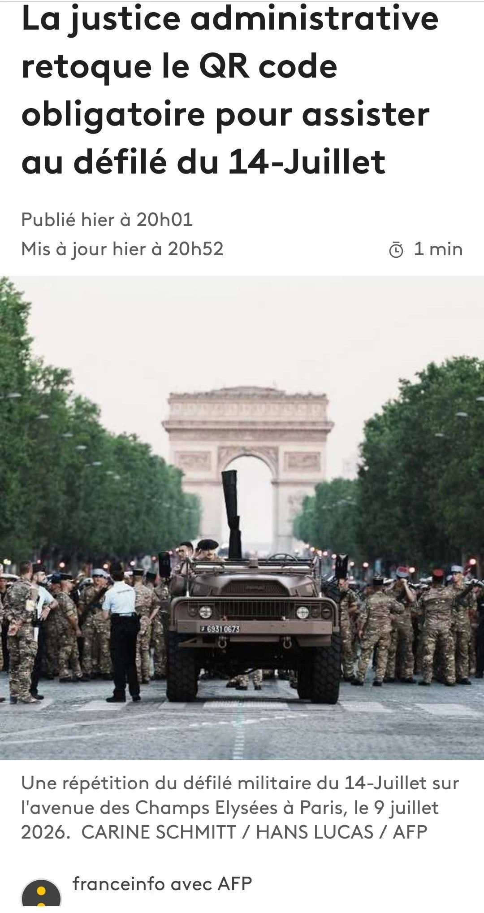

Prise de position
14 Juillet à Paris, le Conseil d’État rétablit l’exigence du QR code
Date indiquée par Facebook · 14 juillet 2026
Repères éditoriaux
Le juge des référés du Conseil d’État a rétabli le laissez-passer numérique et le contrôle d’identité pour accéder au périmètre protégé du défilé du 14 juillet à Paris. La publication conserve aussi notre réaction à la première décision, rendue en sens inverse. Nous y défendions l’accès de toutes et tous à la fête nationale.
Texte conservé avec la publication
Au mépris du peuple 😡 "Le 14 juillet 2026, à 2 heures. Le juge des référés du Conseil d'Etat a annulé l'ordonnance du tribunal administratif de Paris et a rétabli l'exigence d'un QR code et de la présentation d'un titre d'identité pour assister au défilé militaire sur les Champs-Elysées"
Le 14 juillet, c’est le peuple qui prend la Bastille et son destin en main.
La justice vient d’annuler le QR code exigé pour assister au défilé. Une fête née de la souveraineté populaire ne se mérite pas sur inscription : elle appartient à toutes et tous.

Sources
Archive rouge · export Facebook · AR-0002-FB-00735
À lire aussi · « Cercle de silence 167 ». La vidéo du rassemblement